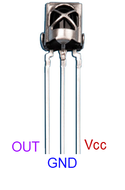 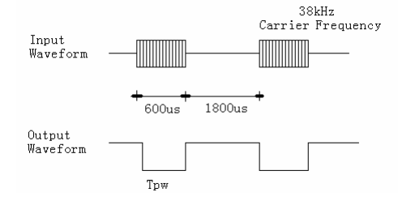 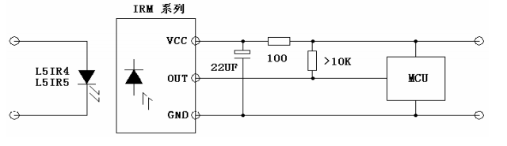 IRM1838(pdf) |
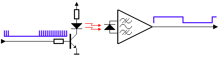 |
| ir protocols(pdf) ir Protocol(SB-Project) 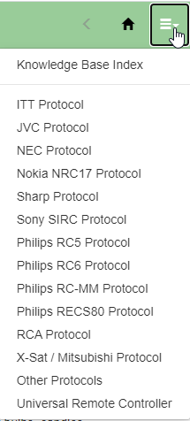 |
| |
| NEC protocol 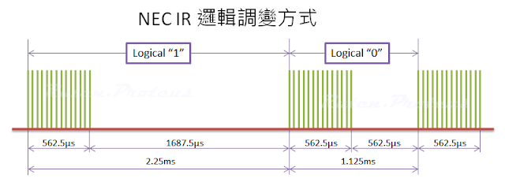 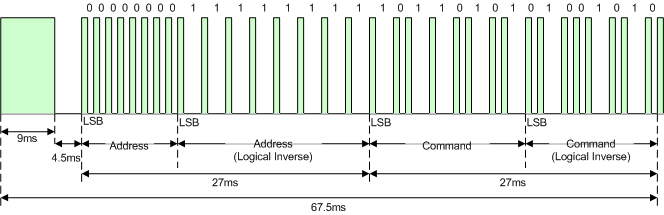 NEC IR transmission frame For an address or command the LSB is transmitted first and MSB at last. When a key pressed in the remote following bits transmitted sequentially. (1) Header a 9ms (16x562.5us)leading pulse burst + a 4.5ms space (2) 8 Bit Address (3) 8 Bit logical inverse of Address* (4) 8 Bit Command (5) 8 Bit logical inverse of Command (6) Termination pulse. (a 562.5µs pulse burst to mark the end of the space) * Extended Mode : NEC address can be extended upto 16 bit if reliability is not a concern. This is done by utilizing both the address and inverse address field. But in this case total message length may not be same. In this way the number of different device address can be upto 65536. REPEAT CODES: 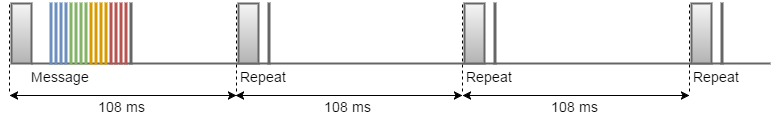 a 9ms leading pulse burst a 2.25ms space a 562.5µs pulse burst to mark the end of the space (and hence end of the transmitted repeat code). 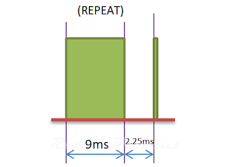 |
| 接收 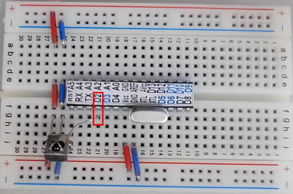 |
| (IRLib2 GitHub) (IRlib2.zip)解壓縮後 將以下資料夾 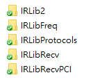 全部放到Arduino libraries下 (IRLibReference.pdf) Using an Infrared Library on Arduino(ref) The protocols are enumerated in IRLibProtocols/IRLibProtocols.h at approximately line 14 as follows. #define UNKNOWN 0 #define NEC 1 #define SONY 2 #define RC5 3 #define RC6 4 #define PANASONIC_OLD 5 #define JVC 6 #define NECX 7 #define SAMSUNG36 8 #define GICABLE 9 #define DIRECTV 10 #define RCMM 11 |
| dump |
| #include "IRLibAll.h" IRrecvPCI myReceiver(2); //create receiver and pass pin number IRdecode myDecoder; //create decoder void setup() { Serial.begin(115200); myReceiver.enableIRIn(); // Start the receiver Serial.println("Ready to receive IR signals"); } void loop() { //Continue looping until you get a complete signal received if (myReceiver.getResults()) { myDecoder.decode(); //Decode it myDecoder.dumpResults(true); //Now print results. Use false for less detail myReceiver.enableIRIn(); //Restart receiver } }
|
| Get raw data |
| #include <IRLibRecvPCI.h> IRrecvPCI myReceiver(2);//pin number for the receiver void setup() { Serial.begin(115200); myReceiver.enableIRIn(); // Start the receiver Serial.println("Ready to receive IR signals"); } void loop() { //Continue looping until you get a complete signal received if (myReceiver.getResults()) { Serial.println("Do a cut-and-paste of the following lines into the "); Serial.println("designated location in rawSend.ino"); Serial.print("\n#define RAW_DATA_LEN "); Serial.println(recvGlobal.recvLength,DEC); Serial.print("uint16_t rawData[RAW_DATA_LEN]={\n\t"); for(bufIndex_t i=1;i<recvGlobal.recvLength;i++) { Serial.print(recvGlobal.recvBuffer[i],DEC); Serial.print(", "); if( (i % 8)==0) Serial.print("\n\t"); } Serial.println("1000};");//Add arbitrary trailing space myReceiver.enableIRIn(); //Restart receiver } } |
| Send raw data |
| //0x00FF6897 //key 0 #define RAW_DATA_LEN 68 uint16_t rawData0[RAW_DATA_LEN]={ 8990, 4474, 570, 570, 558, 570, 514, 594, 562, 562, 542, 590, 542, 570, 562, 562, 566, 554, 550, 1694, 566, 1674, 562, 1694, 542, 1694, 566, 1674, 562, 1694, 542, 1690, 566, 1666, 574, 566, 562, 1666, 574, 1690, 546, 566, 558, 1698, 538, 570, 562, 566, 562, 570, 538, 1694, 566, 566, 538, 570, 562, 1694, 542, 570, 558, 1694, 546, 1690, 566, 1674, 566, 1000}; |
| Send 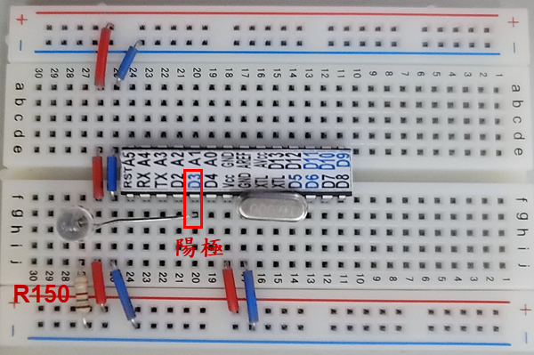 |
| #include <IRLibSendBase.h> //We need the base code #include <IRLib_HashRaw.h> //Only use raw sender IRsendRaw mySender; /* Cut and paste the output from "rawRecv.ino" below here. It will * consist of a #define RAW_DATA_LEN statement and an array definition * beginning with "uint16_t rawData[RAW_DATA_LEN]= {…" and concludes * with "…,1000};" */ //0x00FF6897 //key 0 #define RAW_DATA_LEN 68 uint16_t rawData0[RAW_DATA_LEN]={ 8990, 4474, 570, 570, 558, 570, 514, 594, 562, 562, 542, 590, 542, 570, 562, 562, 566, 554, 550, 1694, 566, 1674, 562, 1694, 542, 1694, 566, 1674, 562, 1694, 542, 1690, 566, 1666, 574, 566, 562, 1666, 574, 1690, 546, 566, 558, 1698, 538, 570, 562, 566, 562, 570, 538, 1694, 566, 566, 538, 570, 562, 1694, 542, 570, 558, 1694, 546, 1690, 566, 1674, 566, 1000}; //0x00FF30CF //key 1 //#define RAW_DATA_LEN 68 uint16_t rawData1[RAW_DATA_LEN]={ 8998, 4466, 582, 546, 582, 550, 558, 550, 578, 546, 586, 546, 558, 554, 578, 546, 582, 550, 554, 1678, 582, 1658, 578, 1678, 558, 1678, 582, 1658, 578, 1678, 558, 1678, 582, 1658, 578, 546, 582, 554, 554, 1678, 582, 1658, 578, 546, 582, 554, 554, 550, 582, 546, 582, 1658, 578, 1678, 558, 550, 582, 546, 582, 1658, 578, 1678, 558, 1678, 578, 1658, 582, 1000}; /* * Cut-and-paste into the area above. */ void setup() { } void loop() { /*Pass the buffer,length, optionally frequency*/ mySender.send(rawData0,RAW_DATA_LEN,38); delay(2000); mySender.send(rawData1,RAW_DATA_LEN,38); delay(2000); } |
| //接收顯示 //顯示於I2C LCD #include <LiquidCrystal_I2C.h> LiquidCrystal_I2C lcd(0x3F,16,2); #include <IRLibAll.h> uint32_t val; //Create a receiver object to listen on pin 2 IRrecvPCI myReceiver(2); //Create a decoder object IRdecode myDecoder; void setup() { lcd.init(); lcd.backlight(); lcd.setCursor(0, 0); myReceiver.enableIRIn(); // Start the receiver lcd.setCursor(0, 0); lcd.print("Ready to receive"); } void loop() { //Continue looping until you get a complete signal received if (myReceiver.getResults()) { myDecoder.decode(); //Decode it val=myDecoder.value; if(val==0xFFFFFFFF) {lcd.setCursor(0, 1); lcd.print("Reapeat"); } else if(val==0) {lcd.clear(); lcd.setCursor(0, 0); lcd.print("unknown protocol"); } else {lcd.clear(); lcd.setCursor(0, 0); lcd.print("Code:"); lcd.setCursor(5, 0); lcd.print(val,HEX); } } myReceiver.enableIRIn(); //Restart receiver } |
| //LCD顯示+遙控 #include <LiquidCrystal_I2C.h> LiquidCrystal_I2C lcd(0x3F,16,2); #include <IRLibAll.h> #define led 13 IRrecvPCI myReceiver(2); IRdecode myDecoder; uint32_t val; void setup() { pinMode(led,OUTPUT); lcd.init(); lcd.backlight(); lcd.setCursor(0, 0); myReceiver.enableIRIn(); // Start the receiver lcd.setCursor(0, 0); lcd.print("Ready to receive"); } void loop() { if (myReceiver.getResults()) { myDecoder.decode(); //Decode it val=myDecoder.value; if(val==0xFFFFFFFF) {lcd.setCursor(0, 1); lcd.print("Reapeat"); } else if(val==0) {lcd.clear(); lcd.setCursor(0, 0); lcd.print("unknown protocol"); } else { if (val==0xFF30CF) digitalWrite(led,1);//key :1 if (val==0xFF6897) digitalWrite(led,0);//key: 0 lcd.clear(); lcd.setCursor(0, 0); lcd.print("Code:"); lcd.setCursor(5, 0); lcd.print(val,HEX); } myReceiver.enableIRIn(); //Restart receiver } } |